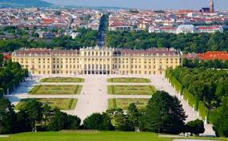

Wenen (Duits: Wien /viːn/; Beiers-Oostenrijks: Wean) is de hoofdstad van Oostenrijk en vormt sinds 1922 een eigen deelstaat. De stad ligt in het noordoosten van het land aan de rivier de Donau. Wenen heeft 1.840.573 inwoners (01-01-2016), en is daarmee veruit de grootste stad en het cultureel en politiek centrum van Oostenrijk. Internationale organisaties die hun hoofdkantoor in Wenen hebben zijn UNIDO, OPEC en IAEA.
Wikipedia
